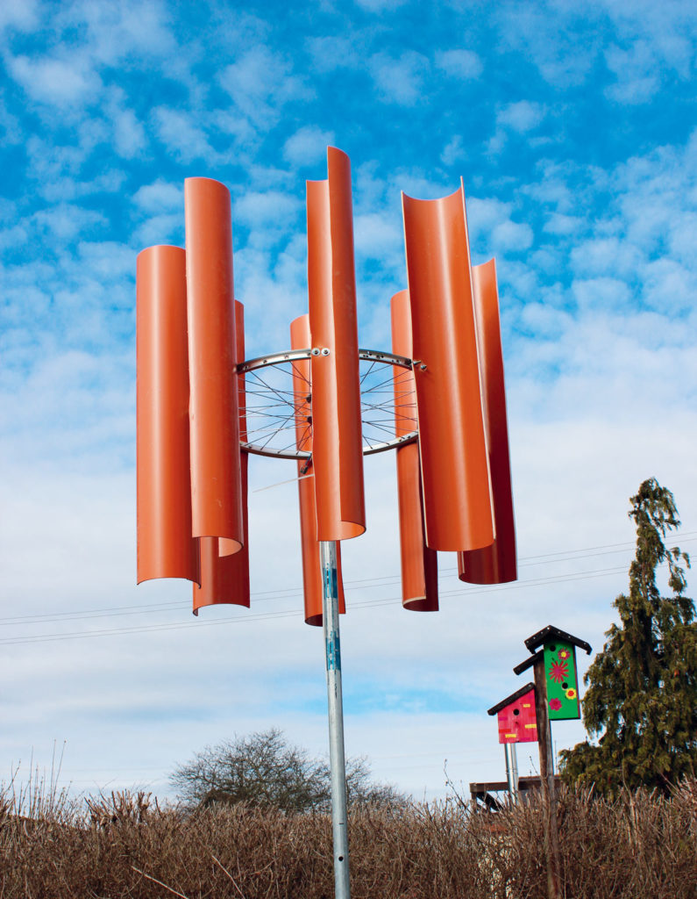

Backyard Wind Power
To begin our project, we will start by listing the marterials needed.
Materials needed for project
- Bicycle front wheel
- PVC drain pipe
- Machine screws, with nuts and large washers.
- Steel water pipe, zinc galvanized, threaded both ends, 1½" diameter.
- Buck-boost voltage converter, DC–DC such as Mesa #DSN6009 4A.
I recommend 30W output capacity. - Electrolytic capacitors, 2200µF (2) 12V minimum.
- Full-bridge rectifier 500mA minimum.
- Diode, 1N4007.
- Electrical tape.
- Wire cables and screw eyes (optional) to guy out a tall mast.
- Concrete, 60lb bag (optional) to set the mast.
BUILD YOUR TURBINE USING THE BIKE WHEEL
First we begin by building our rotor and generator.
The rotor, that is the bicycle wheel is attached
to a mast(steel water pipe) which acts as the stator.
The mast is placed firm on the ground using concrete mixed with cement.
1. Cut the turbine blades

Figure A
To make the turbine blades we use a PVC drain pipe.
Using a thin PVC pipe would be convenient.

Figure B
In cutting use a jigsaw or you simply use a hacksaw. The PVC pipes should be cut into 8 parts.
2. Attach blades to generator

Figure C
For the generator we use a bicycle wheel(front wheel), attached to a dynamo hub.
An aluminium wheel is used
for easy drilling.
Make sure the tire and inner tubes of wheel are removed.

Figure D
Attach the turbine pipes to the wheel using two screws and nut.
Washers should be used to enable evenly
distribution of load on the screws.
Try counting the spokes, and centers on the wheel.
3. Make the mast

Figure E
Make the mast from zinc-plated steel water pipe threaded at both ends (Figure E).
Drill a 9mm hole into
the end cap and tighten your hub nut onto the bike wheel’s
axle to attach the wheel to the cap (Figure F below).
Once the mast has been
mounted securely in the ground (!), you can screw the cap onto the mast.

Figure F
For erecting the mast, the thread at the other end may come in handy. You can
thread a matching tee
piece onto it, and encase the tee in the concrete block that
you’ll pour in the ground. The concrete
should be sufficiently heavy to both support
and anchor the turbine, and must be fixed firmly in
the ground. Then, whenever a
storm comes up, you can simply unscrew the mast from the concrete
block and take
the turbine somewhere safe.
Don’t make the mistake of underestimating the forces created by winds.
They grow
proportionally to the cube (third power) of the wind speed! If necessary,
guy out the mast with wire cables.
4. Assemble the electronics

Figure G.
Our device is set up for charging a lead-acid battery using the current generated by
the
dynamo (Figure G). The hub dynamo produces alternating current, which we’ll
convert to
pulsating direct current using a full-bridge rectifier. To smooth it out, the
pulsating DC is fed
into the two 2200µF (microfarad) electrolytic capacitors.
The smoothed DC is then passed to a buck-boost converter (about $10 on eBay)
which we’ll
use as a charging regulator. This will convert any input voltage from
1.25V to 30V into
an adjustable, constant output voltage. We’ll set the converter’s
output to be 0.7 volts above the
end charging voltage of our battery
(compensating for the diode’s forward voltage). The
1N4007 diode is required
to prevent current flowing back from the battery to the converter.
For example, a 6-volt lead-acid battery has a charging voltage of 7.2 volts.
Adding the diode’s
forward voltage of 0.7V, the converter should be set to
an output voltage of 7.9V.
Your electrical load (whatever’s going to consume
the power, an LED lamp, for instance) will
be connected to the battery’s output.
Be aware that the load must be able to handle the output
voltage set for the
converter. While the generator itself may only be able to provide a small
amount
of current, the battery may output several amps. In case of a short circuit,
the
consequences may be dire (fire hazard). To prevent accidents, you’ll need to
safeguard
accordingly whatever circuit you’re connecting to the battery.